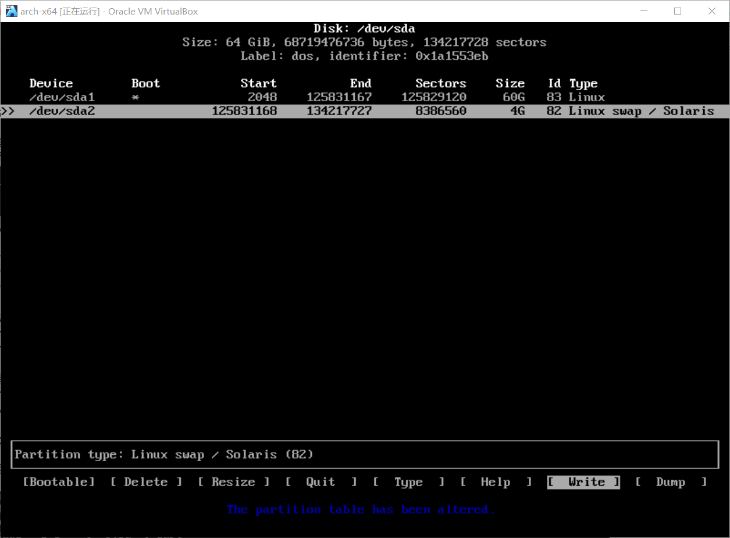
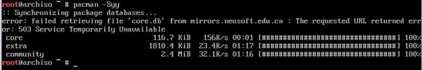
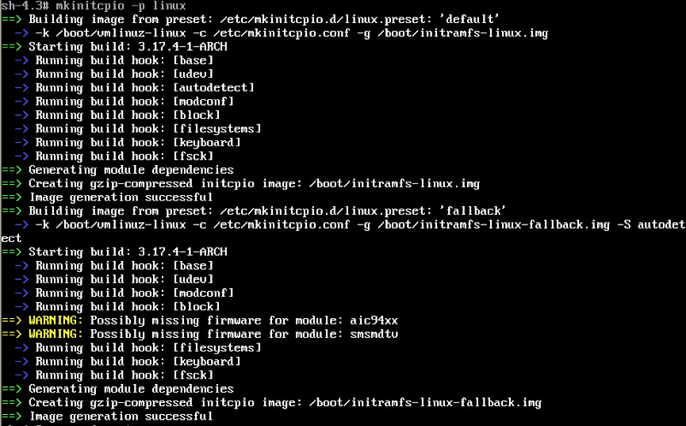

# lsblk /dev/sda

挂载/（根）：
# mount /dev/sda1 /mnt
挂载data：
# mkdir /mnt/data
# mount /dev/sda3 /mnt/data
创建分区：
# cfdisk（select tag选dos）

/dev/sda1给/（根）
/dev/sda2给swap
/dev/sda3给data
格式化文件系统：
# mkfs.ext4 /dev/sda1
# mkfs.ext4 /dev/sda3
创建swap分区
# mkswap /dev/sda2
# swapon /dev/sda2
查看分区：
# lsblk /dev/sda
挂载/（根）：
# mount /dev/sda1 /mnt
挂载data：
# mkdir /mnt/data
# mount /dev/sda3 /mnt/data
修改镜像源list：
# vi /etc/pacman.d/mirrorlist
同步镜像源数据库：
# pacman -Syy

安装系统组件：
# pacstrap /mnt base base-devel
安装grub：
# pacstrap /mnt grub-bios
生成fstab：
# genfstab -p /mnt >> /mnt/etc/fstab
进入新系统：
# arch-chroot /mnt
修改hostname：
# echo Arch > /etc/hostname
设置本地时区：
# ln-s /usr/share/zoneinfo/Asia/Shanghai /etc/localtime
设置硬件时钟：
# hwclock--systohc--utc
修改locale.gen
# vi /etc/locale.gen
配置dns服务器
# vi /etc/dhcpcd.conf
增加一行nohook resolv.conf
# vi /etc/resolvconf.conf
把name_servers改成8.8.8.8
开启dhcp
# systemctl start dhcpcd.service # 连接
# systemctl enable dhcpcd.service # 开机自动连接
内核映像打包
# mkinitcpio -p linux

设置root密码：
# passwd root
# grub-install --target=i386-pc --recheck /dev/sda
# grub-mkconfig -o /boot/grub/grub.cfg
# exit
# umount -R /mnt
# reboot